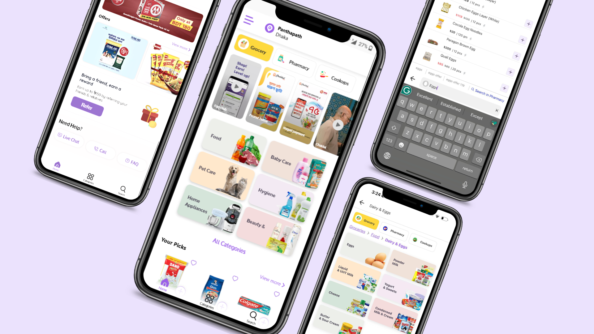
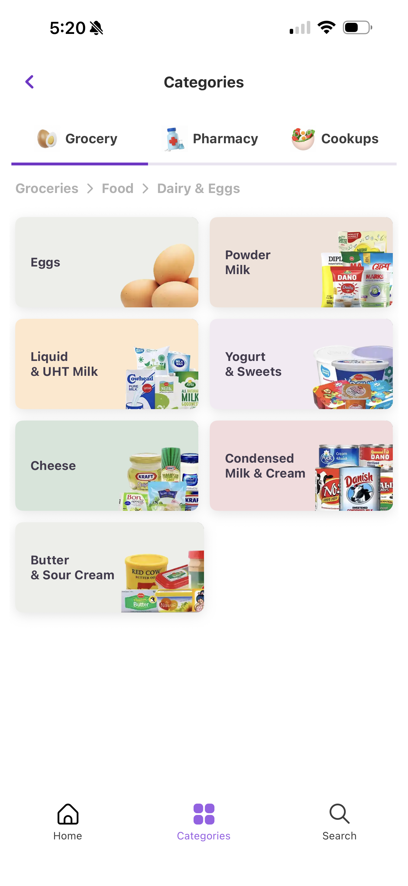
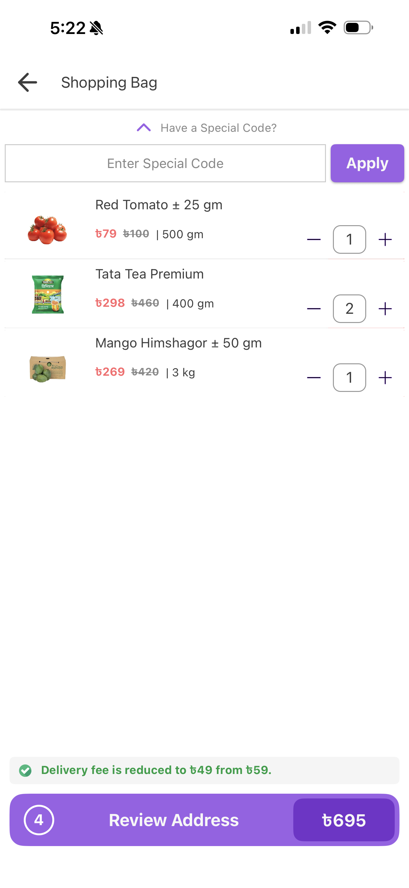
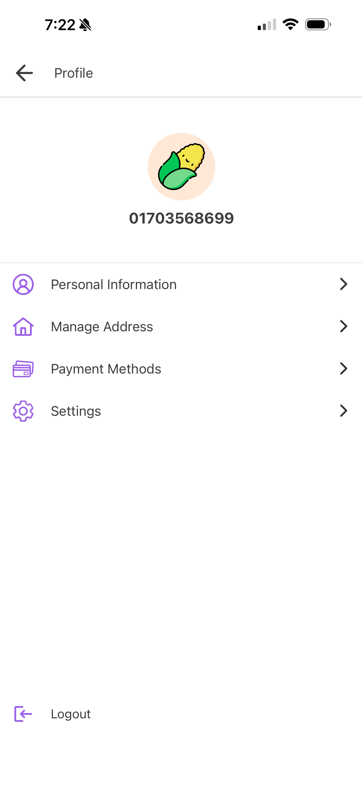
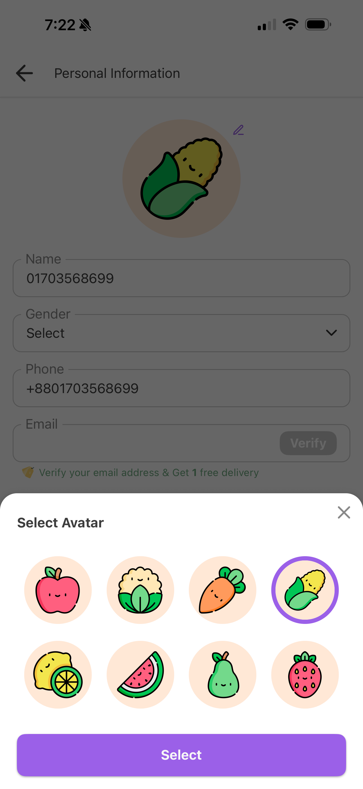
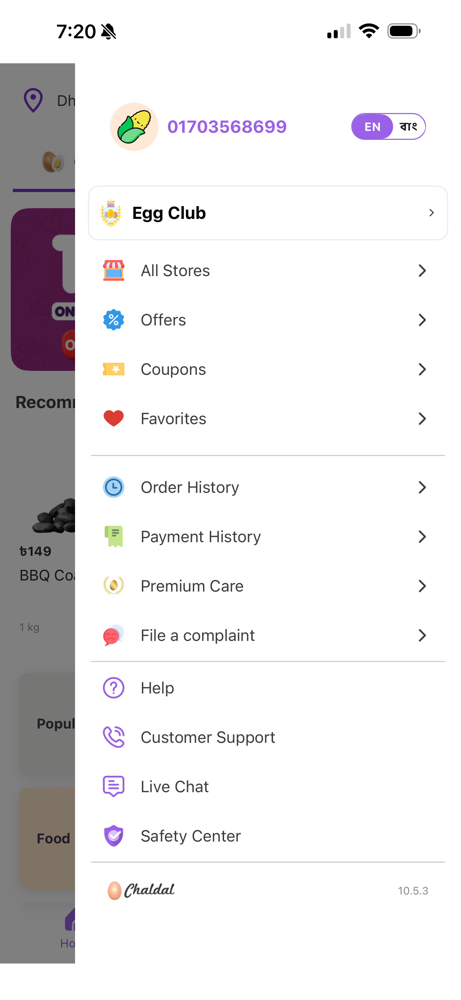

Chaldal — reimagining the app, sprint by sprint
A full reimagining of Bangladesh's largest online grocer, from home and browse through to profile and product catalog, delivered in agile sprints across a four-person team.

The problem
ContextChaldal's profile page mixed personal details, addresses, and payment history into one undifferentiated list, with no hierarchy telling users what was an identity setting versus a transaction record. The home page gave equal visual weight to every entry point, so high-value actions like browsing categories or finding daily offers were buried under generic banners. And the primary action color across the app was a faint red — a hue users instinctively read as a warning, not an invitation to buy.
"How might we give every screen in the app one clear job, instead of asking users to figure it out themselves?"
Planning & discovery
What I learnedBefore any screens were drawn, I audited how other grocery and e-commerce apps in the region structure their profile and catalog pages, then hand-sketched the information architecture for both — splitting "Profile" into personal info, address, payment, history, and settings, and mapping catalog views from list to product detail to checkout.
Key findings
Account information had no separation between what a user controls (name, address) and what the system records (orders, payments) — both lived in the same flat list. On home, the busiest entry points (Categories, Search) competed for attention with promotional banners that served the business more than the shopper. And the existing red CTA color was being read as an alert rather than a call to action — a small but consistent piece of feedback across the audit.
Design process
How I got thereThe team worked in agile sprints, moving through the app area by area — home and navigation first, then profile, then catalog — but each area cycled through the same six stages before it shipped.
| Empathize | Audited comparable grocery apps and walked through Chaldal's existing flows to find where users were getting stuck. |
| Define | Split account information into "who I am" versus "what I've bought," and gave the home page five distinct sections instead of one long scroll. |
| Ideate | Sketched IA for profile and catalog, and explored a new accent color to replace the warning-red CTA. |
| Wireframe | Built low-fidelity flows in Adobe XD for each sprint's scope before moving to visual design. |
| Prototype | Produced clickable, high-fidelity screens for home, profile, and catalog, reviewed with the wider team each sprint. |
| Release | Shipped sprint by sprint, with several settings features still rolling out at project close. |
Home & navigation
The redesigned home page breaks into five purposeful zones: store switching at the top, a Stories strip for daily offers, large category tiles, a personalized "Your Picks" rail, and a bottom bar anchoring Home, Categories, and Search at the thumb. Category browsing keeps a persistent breadcrumb so shoppers always know where they are, and the cart screen puts quantity steppers right on the line item.

Category drilldown — breadcrumb keeps users oriented

Shopping bag — inline quantity steppers and promo code
Profile & account
The profile redesign separates personal information, address, payment methods, and settings into distinct destinations, each with its own icon and label instead of being implied by position in a list. A set of vegetable-character avatars gives the account a sense of ownership ahead of real profile photo uploads.

Profile overview

Select Avatar

Navigation drawer
Product catalog
Product details previously read as a dense paragraph dump. The redesign splits each listing into clear fields — price and unit, origin, manufacturer, and a truncated description with "See more" — so shoppers can scan for the one fact they came for, with a sticky order bar keeping the running total visible while they browse.

Browse list with sticky Review Order bar

Product detail with Frequently Bought Together
Outcome & impact
ResultsSplitting personal, address, payment, and settings data into distinct destinations removed the single biggest source of confusion in the old profile flow, while the new purple call-to-action color reads as an invitation to act rather than a warning to stop. On the catalog side, in-line quantity steppers and a persistent order bar mean fewer taps between finding an item and getting it into the bag.
What shipped by project close
Released sprint by sprint across home, profile, and catalog.
Reflections
Payment methods, account deletion, and notification settings were still mid-rollout at the end of this project — agile delivery meant some features shipped well after the core navigation work. Given more time, the next iteration would replace the vegetable avatars with real profile photo uploads, and extend the same field-by-field product detail pattern to pharmacy and cookup listings, which currently inherit the grocery layout by default.